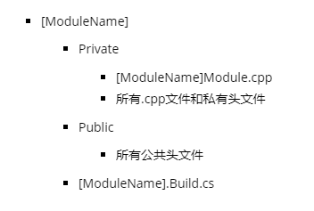
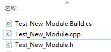
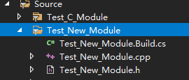
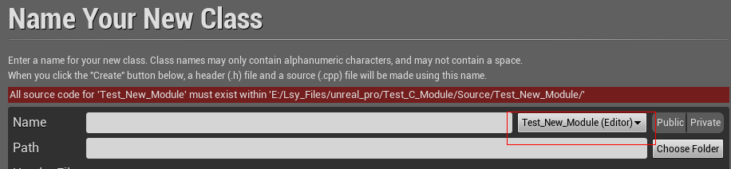
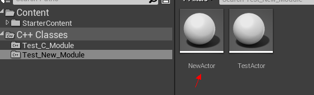
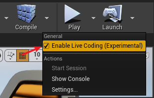
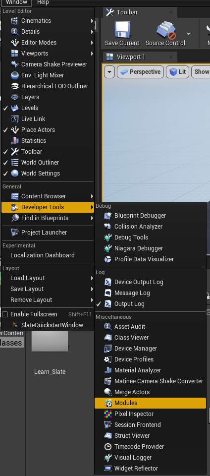
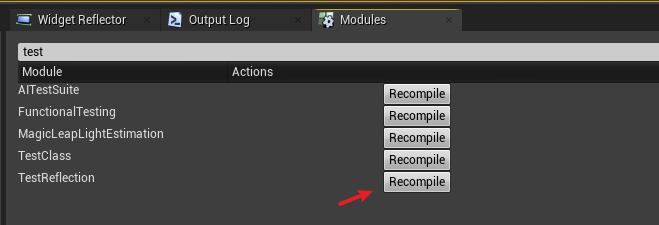
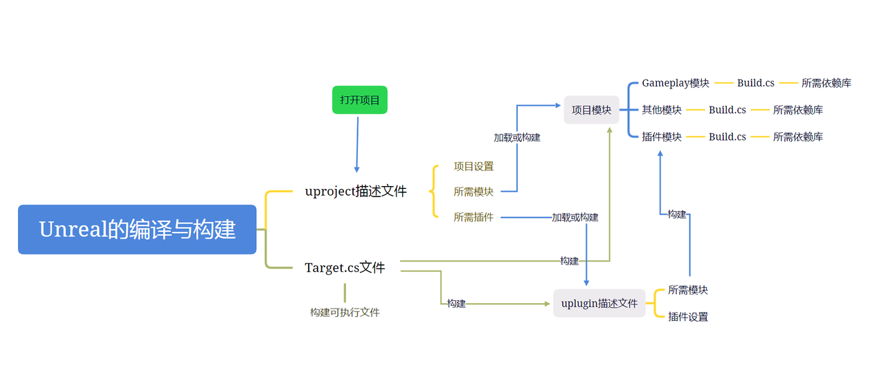

Unreal编译和构建的基础认识#
1. Unreal模块#
官方文档：
模块Modules是Unreal Engine架构的基本构建块。它们在独立的代码单元中封装了具体的编辑器工具、运行时功能、库或其他功能
所有项目和插件在默认情况下都有自己的主模块（primary module），Gameplay模块是Unreal项目的主模块，Gameplay模块是指项目目录下的Source文件夹的内容 Unreal的模块结构一般是指在项目或插件的源码文件目录结构
注意：UnrealBuildTool（UBT）源码是使用C#编写的，构建Unreal模块和项目执行文件的代码文件Build.cs和Target.cs都是c#编写的，如果修改代码过程需要获取帮助可以直接查看父类的源码，路径位置如下：
...\[unreal软件]\Engine\Source\Programs\UnrealBuildTool\Configuration\ModuleRules.cs
...\[unreal软件]\Engine\Source\Programs\UnrealBuildTool\Configuration\TargetRules.cs
使用模块的好处：
a. 模块会强制实施良好的代码分离，可用于封装功能并隐藏代码的内部成分
b. 模块编译为单独的编译单元。这意味着，只有已更改的模块才需要编译，较大项目的编译时间会显著缩短。
c. 模块在依赖性图表中链接在一起，并且仅允许实际使用的代码包含头文件，以符合Include What You Use (IWYU)标准。这意味着，项目中未使用的模块将安全地排除在编译之外。
d. 可以控制在运行时何时加载和卸载具体的模块。这样一来，可以管理哪些系统可用并激活，从而优化项目的性能。
e. 可以基于特定条件（例如，项目是为哪个平台编译的），在项目中纳入或排除模块。
在模块的根目录中创建[ModuleName].Build.cs文件，用以定义与其他模块的依赖性，并能被UBT系统发现
在模块的根目录中创建 Private 和Public子文件夹
a. 与C++代码中的Private、Public或Protected访问权限说明符无关，实际上用于控制模块代码对于其他模块的可用性
b. 若模块不会成为其他模块的依赖性，可不创建 Private 和 Public。文件夹外部的所有代码的行为都是私有Private。如主模块，它很可能位于依赖性链条的末尾
c. Private子文件夹中创建[ModuleName]Module.cpp文件，使用此文件可提供启动和关闭模块的方法，以及Unreal用于管理模块的其他常用函数。[ModuleName]Module.cpp是Unreal Engine源代码中的模块实现文件的典型命名规范
d. 将头文件放在私有Private文件夹中，其内容仅会向其所属的模块公开。该文件夹中的类、结构体和枚举可供同一模块中的其他类访问，但不可用于其他模块中的类
e. 将头文件放在Public文件夹中，Unreal Engine构建系统会向依赖于当前模块的其他模块公开其内容。外部模块中的类将能够扩展Public文件夹中包含的类，并且还能够使用Public文件夹中的类、结构体和枚举创建变量和引用。Private、Public和Protected 说明符将对于函数和变量正常生效。
f. 可在Private和Public文件夹中创建子文件夹，进一步整理代码。尽可能保持一致，在Public创建子文件夹，那么Private对应也有相同名称的文件夹，头文件和cpp文件也须保持到对应子文件夹
下面是模块的推荐文件夹结构示例：

2. Build.cs文件#
官方说明文档：模块
虚幻编译工具(UBT)（Unreal Build Tool）是根据项目中的Target.cs文件和模块中的Build.cs文件的依赖性来构建项目。在构建模块时会忽略IDE解决方案文件，改为查找Source文件夹中的Build.cs文件。每个模块都必须有Build.cs文件，否则不会被UBT发现
在模块的根目录中创建 [ModuleName].Build.cs文件，命名方式：模块名称.Build.cs。模块定义为从ModuleRules类继承的类
// 设置模块对Unreal ENGINE的UBT系统可见。
public class ModuleName: ModuleRules
{
public ModuleName(ReadOnlyTargetRules Target) : base(Target)
{
// 将Unreal的Core、CoreUObject和Engine模块添加到模块的私有依赖性
PrivateDependencyModuleNames.AddRange(new string[] {"Core", "CoreUObject", "Engine"});
}
}
通过PrivateDependencyModuleNames和PublicDependencyModuleNames函数添加依赖模块到依赖列表
具体Build.cs的方法与函数，需要去查看源码：
...\[unreal版本]\Engine\Source\Programs\UnrealBuildTool\Configuration\ModuleRules.cs
3. 加载模块#
.uproject和.uplugin文件包含一个Modules列表，该列表定义了项目需要加载的模块
"Modules": [
{
"Name": "ModuleTest",
"Type": "Runtime",
"LoadingPhase": "Default",
},
{
"Name": "ModuleTestEditor",
"Type": "Editor",
}
]
最常见的模块Type是Runtime和Editor，它们分别用于游戏内的类和仅限编辑器的类 大部分Gameplay模块将直接列出Name，而Type将设置为Runtime。如果LoadingPhase未定义，将设置为Default
加载阶段参考文档：
4. Target.cs文件#
官方说明文档：Target
Build.cs是解决模块与模块间的依赖关系；Target.cs是解决的是构建可执行文件（即exe文件等）中应该包含哪些模块的问题。而实现这些功能靠的都是Unreal中的UBT工具。从逻辑上来说，Target.cs的层级是高于Build.cs
支持以下目标类型的编译：
游戏：需要烘焙数据才能运行的standalone游戏
客户端：与游戏相同，但不包含任何服务器代码；适用于联网游戏
服务器：与游戏相同，但不包含任何客户端代码；适用于联网游戏中的专用服务器
编辑器：扩展虚幻编辑器的目标
程序：基于虚幻引擎打造的standalone工具程序
Target.cs是通过C#源文件声明的，扩展名为.target.cs，并存储在项目的Source目录下。每个.target.cs文件都声明一个类，从TargetRules基类衍生而来，并设置属性来控制如何从其构造函数进行编译。当要求编译目标时，虚幻编译工具将编译target.cs文件，并在其中构造类来确定其设置
.target.cs文件的典型结构：
using UnrealBuildTool;
using System.Collections.Generic;
public class MyProjectTarget :TargetRules
{
public MyProjectTarget(TargetInfo Target) : base(Target)
{
Type = TargetType.Game;
// 此处为其他属性
}
}
5. .uproject和.uplugin描述文件#
官方说明文档：插件
操作uproject和uplugin的结构定义：
项目和插件描述文件是命名分别以 .uproject 和 .uplugin结尾的文件。项目和插件描述文件分别固定位于项目和插件目录中，启动时将被引擎发现。命名方式：[项目名].uproject [插件名].uplugin
项目和插件描述文件都是使用Json文件格式
插件描述文件：
插件描述文件为JSON格式的变量列表，此类列表为FPluginDescriptor类型。其中具有一个附加字段”FileVersion”，其是文件结构中唯一的必需字段。”FileVersion”提供插件描述文件的版本，通常应设为引擎支持的最高版本（当前为”3”）。由于此版本应用于插件描述文件的格式，而非插件本身，因此其可能不会频繁变化，也不应随插件后续版本的发行而改变。要与引擎旧版本进行最大化兼容，可使用较旧版本号，但不建议进行此操作
示例：
{
"FileVersion" :3,
"Version" :1,
"VersionName" :"1.0",
"FriendlyName" :"UObject Example Plugin",
"Description" :"An example of a plugin which declares its own UObject type.This can be used as a starting point when creating your own plugin.",
"Category" :"Examples",
"CreatedBy" :"Epic Games, Inc.",
"CreatedByURL" :"http://epicgames.com",
"DocsURL" :"",
"MarketplaceURL" :"",
"SupportURL" :"",
"EnabledByDefault" : true,
"CanContainContent" : false,
"IsBetaVersion" : false,
"Installed" : false,
// 模块描述部分
"Modules" :
[
{
"Name" :"UObjectPlugin",
"Type" :"Developer",
"LoadingPhase" :"Default"
}
]
}
// 插件描述文件格式
插件描述符的模块描述：
各条目须具有”Name”和”Type”字段。”Name”是插件模块的唯一命名，将随插件而加载。在运行时，插件的”Binaries”文件夹中需存在正确的插件二进制文件，并带有指定模块命名。对于具有Source目录的模块，模块的子文件夹树中须存在匹配的”.Build.cs”文件。”Type”设置模块的类型。有效的选项为：Runtime、RuntimeNoCommandlet、Developer、Editor、EditorNoCommandlet 和 Program。此类型决定能加载模块的应用程序类型。插件可使用不同类型模块的组合
可参考：FModuleDescript
6. 在C+目录添加文件夹#
参考:
在Unreal的C+项目中，无法直接在编辑器上直接添加文件夹目录，需要通过代码的方式才可以实现，操作如下：
在C+目录下添加如下文件：

// Test_New_Module.Build.cs
// Copyright Epic Games, Inc. All Rights Reserved.
using UnrealBuildTool;
public class Test_New_Module : ModuleRules
{
public Test_New_Module(ReadOnlyTargetRules Target) : base(Target)
{
PCHUsage = PCHUsageMode.UseExplicitOrSharedPCHs;
PublicDependencyModuleNames.AddRange(
new string[]
{
"Core",
"CoreUObject",
"Engine",
"InputCore",
"LevelEditor",
"Slate",
"EditorStyle",
"AssetTools",
"EditorWidgets",
"UnrealEd",
"BlueprintGraph",
"AnimGraph",
"ComponentVisualizers"
}
);
PrivateDependencyModuleNames.AddRange(
new string[]
{
"Core",
"CoreUObject",
"Engine",
"AppFramework",
"SlateCore",
"AnimGraph",
"UnrealEd",
"KismetWidgets",
"MainFrame",
"PropertyEditor",
"ComponentVisualizers"
}
);
// Uncomment if you are using Slate UI
// PrivateDependencyModuleNames.AddRange(new string[] { "Slate", "SlateCore" });
// Uncomment if you are using online features
// PrivateDependencyModuleNames.Add("OnlineSubsystem");
// To include OnlineSubsystemSteam, add it to the plugins section in your uproject file with the Enabled attribute set to true
}
}
// Test_New_Module.h
// Copyright Epic Games, Inc. All Rights Reserved.
#pragma once
#include "UnrealEd.h"
#include "SlateBasics.h"
#include "SlateExtras.h"
#include "Editor/LevelEditor/Public/LevelEditor.h"
#include "Editor/PropertyEditor/Public/PropertyEditing.h"
#include "IAssetTypeActions.h"
#include "CoreMinimal.h"
#include "Modules/ModuleManager.h"
class TestModuleListenerInterface
{
public:
virtual void OnStartupModule() {};
virtual void OnShutdownModule() {};
};
class FTest_New_Module: public IModuleInterface
{
public:
void StartupModule() override
{
if (!IsRunningCommandlet())
{
AddModuleListeners();
for (int32 i = 0; i < ModuleListeners.Num(); ++i)
{
ModuleListeners[i]->OnStartupModule();
}
}
}
void ShutdownModule() override
{
for (int32 i = 0; i < ModuleListeners.Num(); ++i)
{
ModuleListeners[i]->OnShutdownModule();
}
}
virtual void AddModuleListeners();
protected:
TArray<TSharedRef<TestModuleListenerInterface>> ModuleListeners;
};
// Test_New_Module.cpp
#include "Test_New_Module.h"
#include "Modules/ModuleManager.h"
IMPLEMENT_GAME_MODULE(FTest_New_Module, Test_New_Module)
void FTest_New_Module::AddModuleListeners()
{
// add tools later
// "new MenuTool" 是该模块下的子目录
// ModuleListeners.Add(MakeShareable(new MenuTool));
}
在C+的目录…Editor.Target.cs添加如下：
ExtraModuleNames.AddRange( new string[] { "Test_New_Module" });
在项目的uproject添加加载模块
{
"Name": "Test_New_Module",
"Type": "Editor",
"LoadingPhase": "PostEngineInit",
"AdditionalDependencies": [
"Engine"
]
}
编译成功之后，在编辑器添加类时，可选择新添加的模块 
给该新模块添加一个Actor的类，编译成功之后才能在编辑器的浏览器上可见 
7. 命令行#
参考: 命令行参数
可用命令行添加额外的插件路径
在cmd使用以下代码
// 主要使用参数 -PLUGIN= ，exe可以是UE4Editor-Cmd.exe
...\UE4Editor.exe -PLUGIN=E:\Lsy_Files\unreal_pro\Test_Scripts_Pro\Plugins
8. 实时编译(代码热更新)#
在Unreal新的版本都支持实时编译和热更新
主要有两种方案：
编译开启Live Coding
注意目前Live Coding还是存在很多无法编译热更的问题，推荐使用：Recompile Live Coding
在工具栏的编译按钮下可开启 Live Coding，如果编译失败，建议查看失败描述；一般实时编译与一般编译生成的文件不一样，所以需要实时编译的模块，要把编译文件夹Binaries和Intermediate删掉并重新编译才能使用实时编译或恢复默认编译；一般直接在IDE编写好代码，之后点击编译按钮即可弹出实时编译的窗口，可以预览到实时编译的情况，编译成功即可 
Modules管理器卸载、重加载、重编译
Unreal界面菜单栏-> Window -> Developer Tools -> Modeles
该管理器可以实现加载、卸载、重加载、重编译等功能，一般在IDE编写好代码之后，先卸载模块再重编译最后再重新加载即可
有些模块没有卸载和加载按钮的原因，可参考： What determines the availability of unload / reload buttons for editor modules? - Platform & Builds
模块的卸载和加载有时候不存在，可以使用Recompile（推荐使用）功能也能实现热更的效果（但该功能不能和Live Coding混合使用）


9. 构建失败#
在Unreal C+的项目，通过编辑器新建C+的类时，编译出现报错，显示的报错内容基本上都是”无法解析外部符号”，那么基本上可以判定是新添加的类没有在Bulid.cs文件添加该类的依赖库，可以直接在Build.cs添加所需的依赖库（可以直接在UE安装目录的Source找所对应的类的库，可直接复制库的Build.cs文件依赖库），然后重新编译即可
构建项目失败 可以使用cmd运行构建工具，代码如下：
// 4.27+
"...(UE安装目录)/Engine/Binaries/DotNET/UnrealBuildTool.exe" Development Win64 -Project=".../***.uproject" -TargetType=Editor -Progress -NoEngineChanges -NoHotReloadFromIDE
// 5.0+
"...(UE安装目录)/Engine/Binaries/DotNET/UnrealBuildTool/UnrealBuildTool.exe" Development Win64 -Project=".../***.uproject" -TargetType=Editor -Progress -NoEngineChanges -NoHotReloadFromIDE
构建失败的本地日志位置
// 日志文件路径在 系统用户文件路径下； 注意每次项目构建都会把日志写入到当前文件内
[用户文件夹]\AppData\Local\UnrealBuildTool\Log.txt
10. 总结#
模块Modules是Unreal Engine架构的基本构建块，Gameplay模块是Unreal项目的主模块
模块的 Private 和 Public 子文件夹；Private 的内容仅会向其所属的模块公开，一般放置cpp文件；Public向依赖于当前模块的其他模块公开其内容，一般放置头文件，也会有cpp文件
UnrealBuildTool（UBT）源码是使用C#编写的，构建Unreal模块和项目执行文件的代码文件Build.cs和Target.cs都是c#编写的，Build.cs和Target.cs的功能都需要UBT来实现
Build.cs是解决模块与模块间的依赖关系，通过PrivateDependencyModuleNames和PublicDependencyModuleNames函数添加依赖模块到依赖列表，在 .uproject和.uplugin文件的Modules列表添加需要加载的模块
Target.cs是解决构建可执行文件时应包含的模块，其编译的目标类型：游戏、客户端、服务器、编辑器、程序
流程参考图（可能有误）： 